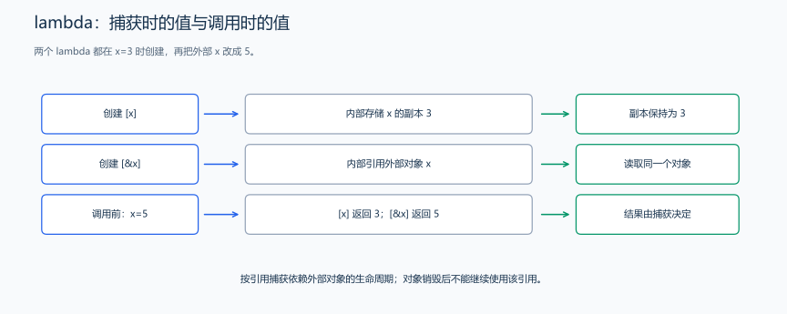
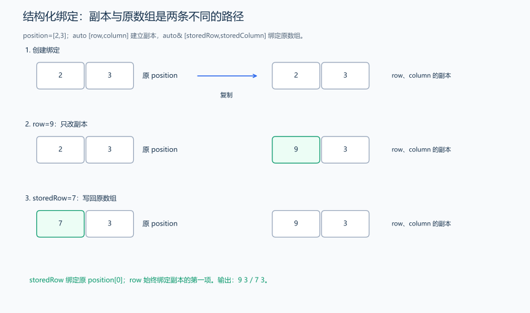
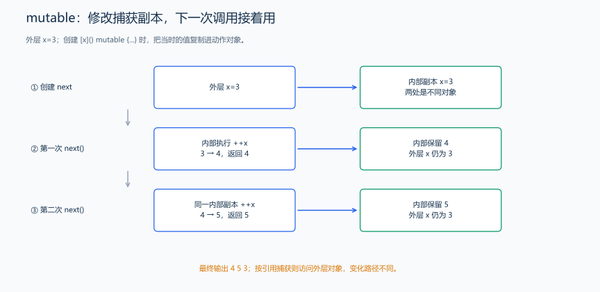

（九） auto、lambda 与结构化绑定
已经能用引用访问原数据，也见过 auto 推导整数类型。现在从三个小应用理解它们如何减少重复：推导变量类型、临时写一个计算动作、给数组中的两个字段取名字。
1. auto 类型推导与引用绑定
auto count = 10; // 初始化表达式为 int，所以 count 是 int。
auto price = 12.5; // price 是 double。
int value = 3;
auto copy = value; // int 副本；修改 copy 不会改变 value。
auto &alias = value; // int&，alias 是 value 的别名。
const auto &view = value; // const int&，只能通过 view 读取。auto 的基本声明需要提供可推导类型的初始化表达式。普通的 auto copy=value 不会保留 value 的引用身份；需要绑定就显式写 auto&。这里没有“万能类型”，count 创建后仍是一个确定类型的变量。
2. lambda：保存一个小计算动作
题目原文（自拟）： 程序无需输入。x 初值为 3，分别建立按值和按引用捕获 x 的计算动作，每个动作接收 y，返回 x+y。再把 x 改为 5，传入 y=2，输出两个结果。

#include <iostream>
using namespace std;
int main() {
int x = 3;
auto byValue = [x](int y) { return x + y; }; // 创建时保存 x 的副本 3。
auto byReference = [&x](int y) { return x + y; }; // 绑定原 x，调用时读它。
x = 5;
cout << byValue(2) << ' ' << byReference(2) << '\n'; // 分别得到 3+2、5+2。
}输出 5 7。lambda 可以按“小函数”阅读：捕获列表 []、参数列表 (int y)、函数体 {...}。返回类型在这里由 return 表达式推导，也可显式写 -> int。创建 lambda 时不执行函数体，像调用函数一样写 byValue(2) 才执行它。
[x] 捕获副本，[&x] 捕获引用；[=]、[&] 则按相应方式捕获函数体用到的外部局部变量。引用捕获不自动延长 x 的生命周期，不能让这个动作在 x 销毁后继续访问它。后面会把同样的动作交给排序算法，或用 std::function 保存为可替换的规则。
3. 结构化绑定：副本与引用仍要分清
如果数组的两项表示行和列，每次写 position[0]、position[1] 不易看出含义。C++17 的结构化绑定可以一次给两项取名字。

#include <iostream>
using namespace std;
int main() {
int position[2] = {2, 3};
auto [row, column] = position; // 得到数组的独立副本中的两个字段。
row = 9; // 原 position[0] 不变。
auto &[storedRow, storedColumn] = position; // 引用绑定到原数组。
storedRow = 7; // 现在改动的是 position[0]。
cout << row << ' ' << column << '\n';
cout << position[0] << ' ' << storedColumn << '\n';
}输出为 9 3、7 3，各占一行。数组有两项，就用 row、column 两个名字分别绑定。后面的 pair、tuple 和映射记录也可使用相同写法，先理解这两个数组元素上的副本与引用即可。
4. auto 推导的是表达式已有类型
| 声明 | 推导结果 | 为什么 |
|---|---|---|
auto value=5/2; |
int，值为 2 | 初始化表达式已经做了整数除法 |
auto value=5.0/2; |
double，值为 2.5 | 操作数使除法按浮点进行 |
const int source=7; auto copy=source; |
copy 为可修改的 int 副本 | 普通按值 auto 不保留来源的顶层 const |
auto& alias=source; |
const int& | 引用仍受原对象只读类型约束 |
auto 不会推测“我们想要小数”或“以后可能放更大数”。先把表达式的类型算对，再让 auto 推导；同一声明中的多个变量也不能要求 auto 同时成为互相矛盾的类型。
5. 按值捕获与 mutable 状态更新
题目原文（自拟演示）： x 初值为 3，lambda 按值捕获 x，每次调用给自己的副本加一并返回；连续调用两次，最后输出两结果与原 x。
推导： 普通按值捕获的 lambda 在函数体中默认不能直接修改这个捕获副本。添加 mutable 允许修改副本；副本是该 lambda 对象的状态，不会每次调用又从原 x 重新复制。
#include <iostream>
using namespace std;
int main() {
int x = 3;
auto next = [x]() mutable {
return ++x; // 改 lambda 自己保存的副本，不改外层 x。
};
int first = next(); // 副本从 3 变成 4。
int second = next(); // 同一动作中的副本从 4 继续变成 5。
cout << first << ' ' << second << ' ' << x << '\n'; // 输出 4 5 3。
}
对照按引用捕获：引用方式会修改外层 x，mutable 的按值方式只修改内部副本。需要稍后执行的动作时，也要检查被引用对象是否仍然存活；std::function 能保存动作，但不会替它延长外部变量的生命周期。